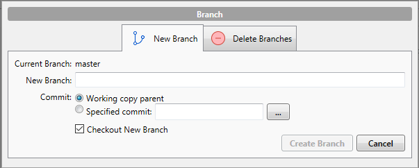
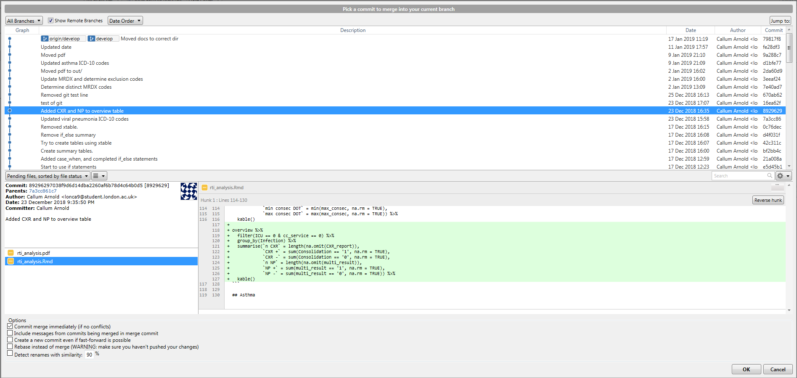

4.6 Branching
Branching is a key part of the Git work-flow. It allows you to make changes to your code, without worrying about breaking previously ‘good’ code. But what is it?
Simply put, when you create another branch you are creating a copy of your code at that point in time. This is useful because it allows you to make changes to your copy, and leave your original code intact! So there’s no concern about breaking your working code while you test out some ideas.

“But isn’t that why we use Git?”
Kind of. But Git is only so powerful. If you have working code, you don’t want to put it out of action whilst you test ideas out, especially if other people need to use your code and can’t wait for you to figure out your future problems. So creating another branch allows you to get around this issue. For most projects, you can get away with just two branches, a master and a develop, which are explained below. If your project is complex, and requires multiple people to work on the code at the same time, it would be worth you looking at implementing this model.
The image to the right is copied from the model listed above. It is useful in illustrating the master and develop approach to branching.
4.6.1 Creating a branch
As with all things in Git, you can do this multiple ways. I prefer to use the client, as I find it far more intuitive when you can see the changes, but you can use the command line or Git bash. If you want to explore the command line code, I would recommend visiting this website, which allows you to interact with the code through illustrations.
When you are in your client (in this case, SourceTree), open the repository you would like to create a branch in. You will notice that there are two buttons called Branch and Merge. If you click on Branch, you will see something like this

Enter the branch name you would like to create into New Branch (I would suggest develop), and hit Create Branch. That’s it. You now have a master and develop branch.
You might notice the tick-box Checkout New Branch. This means SourceTree will execute the command git checkout develop i.e. you will move to the develop branch to continue your work. Now, any changes you make to your code will happen in the develop copy of the code, not in your master branch. Neat. If you want to move back to master branch at some point, you simply right click on the master branch on the left side of SourceTree, and select Checkout master....
4.6.2 Merging a branch
You’ve created a develop branch so you can keep you master pristine and in working condition. But now you’ve made changes you’re happy with, and you want to incorporate them in the main code. To do this, you need to merge the changes from develop into master.
To do this, first you need to checkout the master branch, so you are merging changes into it. Then, click on the Merge button in SourceTree. Select the commit you would like to merge into the master branch (most likely the top one in the develop branch), and click OK. You should have a view like this.

You have now merged your first feature. Whilst the merge feature is particularly useful, it is not the only way of doing this. rebase is another option that works in a slightly different way. It is slightly beyond the scope of this document, but you should read this document and visit this website, as suggested previously, to get experience of putting them both into practice.